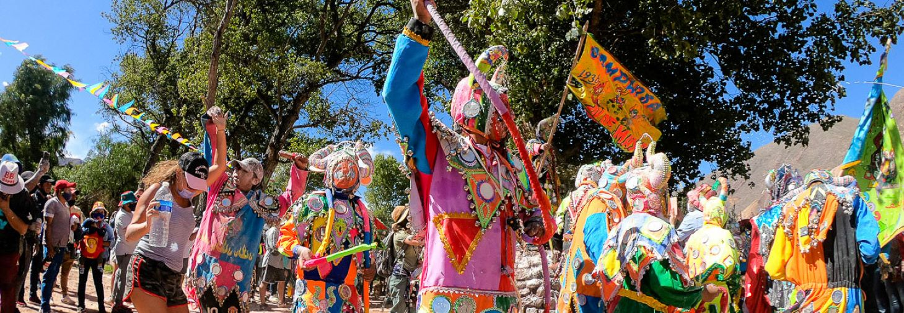

COLOR, TRADICIÓN Y ALEGRÍA EN EL NORTE
Los expertos hablan de una celebración que mezcla las tradiciones introducidas por los españoles durante la conquista de América con los cultos de los pueblos originarios. Como todos los años, el espectáculo del carnaval de la Quebrada de Humahuaca, especialmente en Tilcara, provincia de Jujuy, combinó sus colores con los rituales vinculados a la tierra.
Tradicionalmente, la celebración en el corazón de la provincia de Jujuy comienza el sábado anterior al fin de semana de Carnaval, cuando grupos de comparsas llegan a las laderas de los cerros que rodean los pueblos para desenterrar al "diablo", que fue enterrado al finalizar el carnaval del año anterior. Una vez desenterrado "el diablo" se tiran bombas de estruendo y la comparsa (donde muchos están disfrazados de diablo) comienza a descender a los pueblos bailando al ritmo de músicas tradicionales como el carnavalito jujeño. En todas las comparsas hay músicos con trompetas, redoblantes, trombones, saxo, bombos, entre otros. Las comparsas llevan un estandarte que las identifican y recorren las calles del pueblo, donde en diferentes casas son invitados a beber.
(ver película)